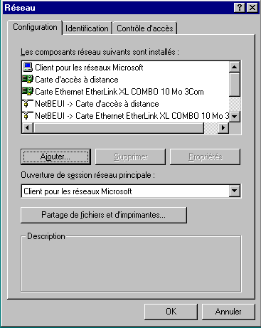
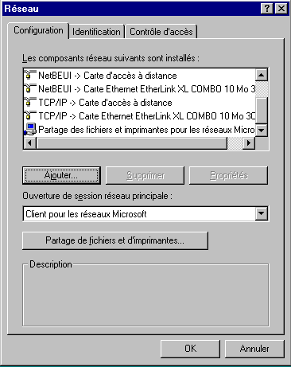
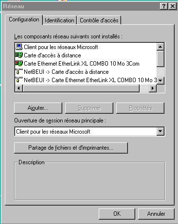
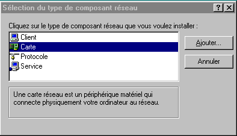
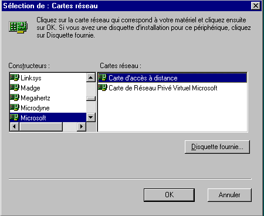

WINDOWS 95 et Internet
Configuration d'une connexion en dial-up IP
Document inspiré de
France-Pratique
2ème étape : sélection des composantes "RESEAU" nécessaires
- A partir du bureau de WINDOWS 95, double-cliquez sur "poste de travail".
- Double-cliquez sur icône "Panneau de configuration".
- Double cliquez sur icône "Réseau" : une fenêtre "Réseau" apparaît avec 3 onglets.
- Cliquez sur l'onglet configuration : vous devriez avoir les éléments suivants :
Les points importants sont :
- "Carte d'accès distant" ou "Carte d'accès à distance"
- TCP/IP


Si "TCP/IP" n'est pas dans la liste, faire :
- Cliquez sur "Ajouter"
- Cliquez sur "Carte"
- Cliquez sue "Ajouter"
- Choisir à gauche "Microsoft", et à droite "TCP/IP"
- Cliquez sur OK, jusqu'à la fenêtre ci-dessus
Si "Carte d'accès distant" n'est pas dans la liste, faire :
- Cliquez sur "Ajouter"
- Cliquez sur "Carte"
- Cliquez sue "Ajouter"
- Choisir à gauche "Microsoft", et à droite "Carte d'accès distant" ou "Carte d'accès à distance"
- Cliquez sur OK, jusqu'à la fenêtre ci-dessus



Dans la zone "Ouverture de session réseau principale", validez "client pour les réseaux Microsoft".
© FRANCE PRATIQUE
Sommaire
Etape 1
Etape 3